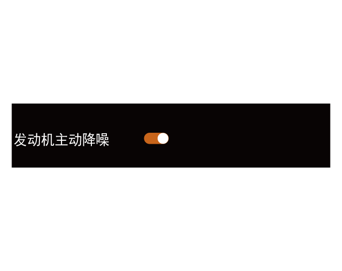

6.7 发动机主动降噪系统
发动机主动降噪系统通过实时监控车内发动机的噪声水平，通过音响系统发出抑制性噪声与实际噪声交汇叠加、相互抵消达到降噪效果。该系统可以自动检测发动机的转速和车内噪声水平，系统开启后驾驶员及乘客均无需进行其他操作，即可在车内降低发动机噪声，提升驾驶员及乘客的听感体验。
注意+
该功能仅对发动机特定频段（30-300Hz）的噪音进行抑制和降噪，并非车内全部噪音。
开启或关闭系统
整车电源在“ON”挡位，通过音响系统“设置→声效设定→系统声效→发动机主动降噪”，点击“发动机主动降噪”右侧 软按键，设置该功能的开启或关闭。
软按键，设置该功能的开启或关闭。
限制条件
包括但不限于以下情况，发动机主动降噪系统可能存在关闭或无法工作：
–车门、车窗、后备箱未完全闭锁。
–音响系统功率放大器故障，如无法供电或供电异常。
提示+
故障及中断问题解决
–系统故障或无法工作后，正常情况重新打开系统开关后即可。
–部分情况下，车辆须关闭后重启。如车辆重启后，仍然无法开启或进入发动机主动降噪系统，请联系广汽传祺特约店进行检修。
— 页面到底了 —